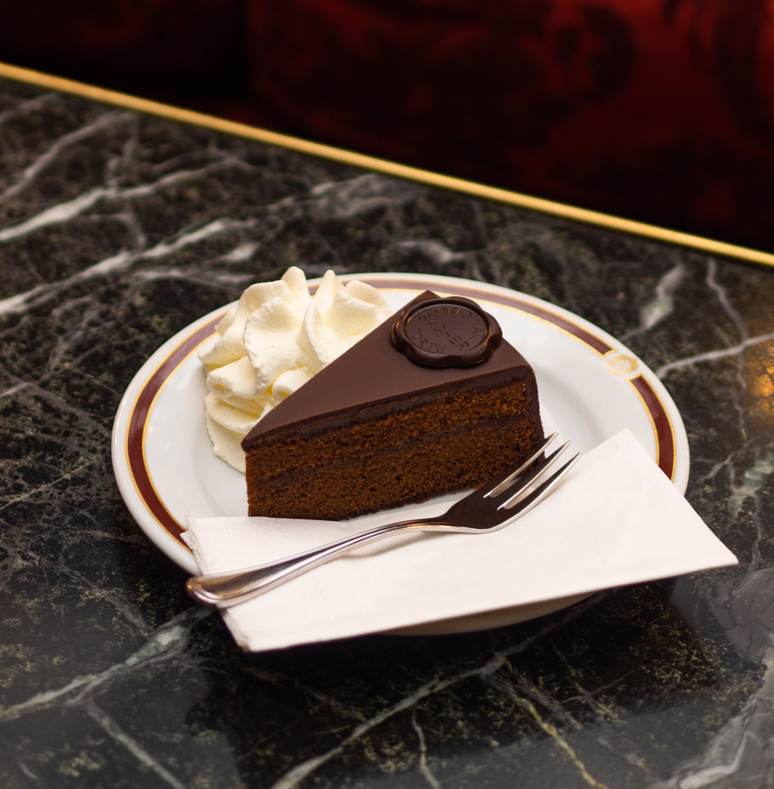

The original Sacher-Torte is the most famous Austrian cake. It is a classic, layered chocolate sponge cake that is thinly coated with high-quality apricot jam and topped with chocolate icing. Sacher-Torte is said to taste the best when accompanied by a small cloud of unsweetened whipped cream on the side.
Meal prep time : 1 hour
Servings : 1